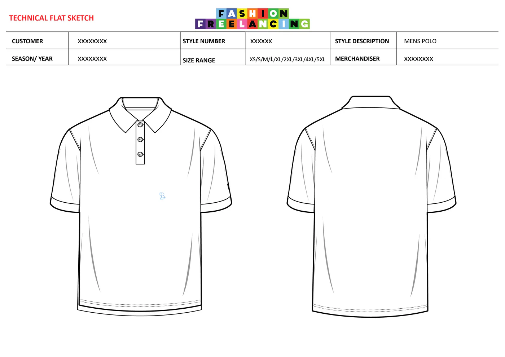
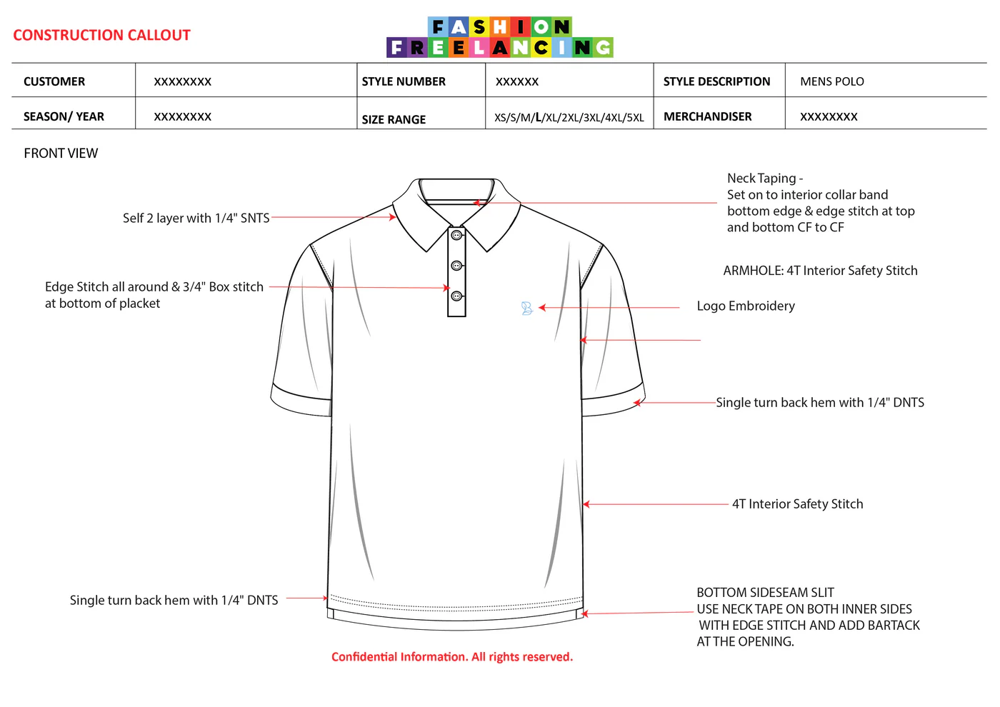
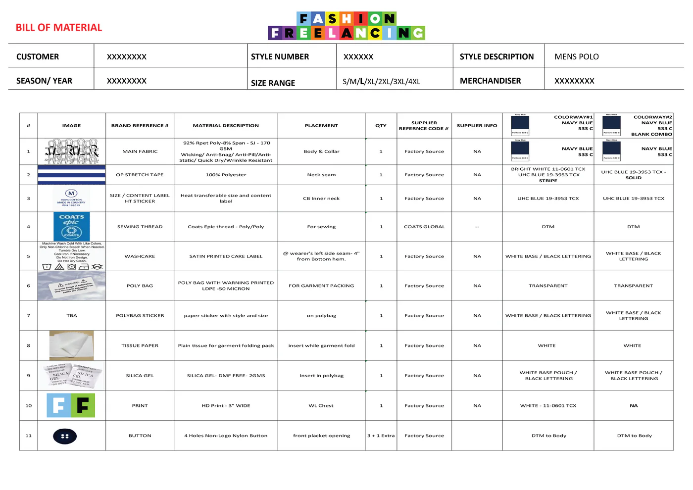
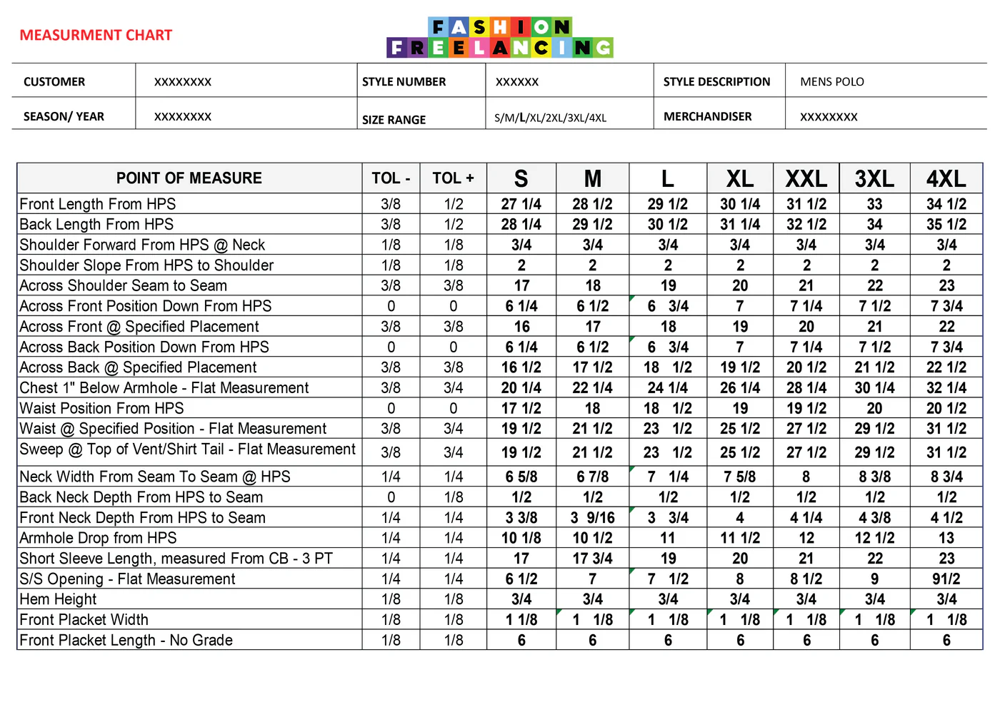
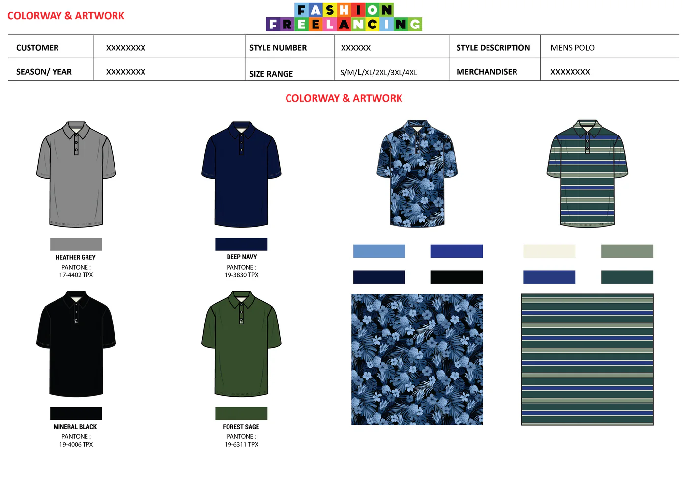
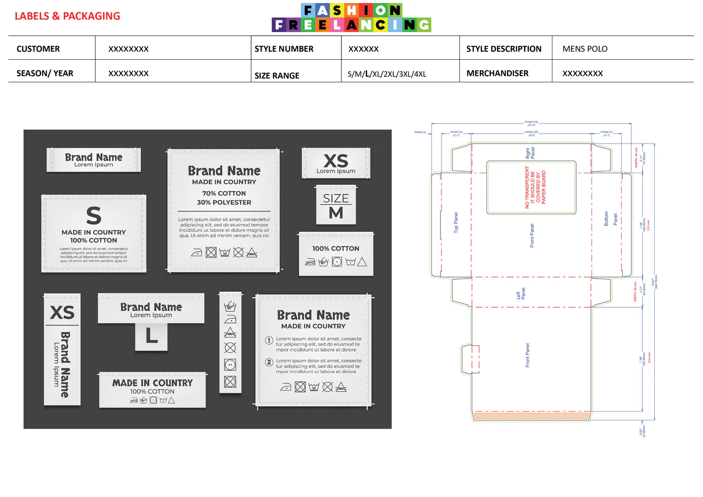

Placement print pack
- 3 graphic concepts, 1 finalised placement
- Print spec sheet
- Pantone TCX callouts
Streetwear drops and basics brands
Factory-ready tech packs for fashion brands — every measurement, trim and stitch specified. Send a sketch, a photo or a Pinterest board; we build the rest.
Six pages, each answering a question the factory would otherwise guess at.

Front, back and detail line drawings of your garment. Why the factory needs it: this is the picture they cut from — ambiguity here becomes a wrong sample later.

Seam types, stitch specs, finishes and tolerances, pointed at the exact spot on the garment. Why the factory needs it: construction is where quotes differ most — precise callouts mean precise prices.

Every fabric and trim named, with composition, weight and a colour reference against each. Why the factory needs it: the BOM is what they source from — a missing trim stalls the whole order.

Full points of measure for every size in the run, with tolerances. Why the factory needs it: this is the difference between "fits like the sample" and a size run nobody can wear.

Every colorway with Pantone or fabric references, plus print and embroidery placement. Why the factory needs it: "that blue" is not a colour — a Pantone code is.

Care label content, brand and size label placement, and the carton dieline your packer folds from. Why the factory needs it: compliance lives here — and so does the unboxing your customer sees.
A sketch, a photo or reference links. No perfect drawings needed — that's our job.
One number in writing within 24 hours. No hourly surprises, no scope creep.
Flats first — you sign off the drawing before we build specs, BOM and construction.
Two revision rounds included, then the factory-ready PDF and editable source — yours outright.
Hoodies · tees · caps
Leggings · sets · stretch
Jeans · jackets · washes
Drape-critical pieces
Bombers · coats · parkas
Fit-sensitive builds
Compliance-aware specs
Bags · scarves · soft goods
Written in international factory-standard terminology — understood in India, China, Turkey, Portugal and beyond, even when you don't share a language.
Pick the one that matches where your collection is. Every package is quoted at a fixed price before any work starts.
Streetwear drops and basics brands
Swimwear, activewear and kidswear
Emerging brands and seasonal line launches
If you want accurate quotes and correct samples, yes. Most professional factories won't take an order seriously without one — and the ones that do will quote conservatively to cover the unknowns in your brief.
They can try — but that hands them control of your measurements and finish, and leaves you with nothing in writing when the sample comes back wrong. Your tech pack is your spec on paper: it keeps every factory, every season, on the same page.
Completely normal — designs evolve through sampling. Two revision rounds are included with every pack; bigger changes after delivery get a fair fixed quote, never hourly billing.
Yes. A photo, a rough sketch, a Pinterest board or even a clear written description is enough to start. We build the technical flats for you — that is part of the service.
Yes — packs are written in international factory-standard terminology and format, understood in India, China, Turkey, Portugal, Bangladesh and beyond, even when you and the factory don't share a language.
Small runs need clearer specs, not vaguer ones — factories give small orders less hand-holding, so the document has to answer their questions before they ask.
You do, fully — the print-ready PDF and the editable source file are handed over on delivery. Take them to any factory, any time.
Would you rather hire one person? Our team delivers Tech Pack end to end — or you can brief an approved Tech Pack specialist directly from our curated network.
Find a Tech Pack specialistGive them one. Fixed quote in 24 hours — free to ask.